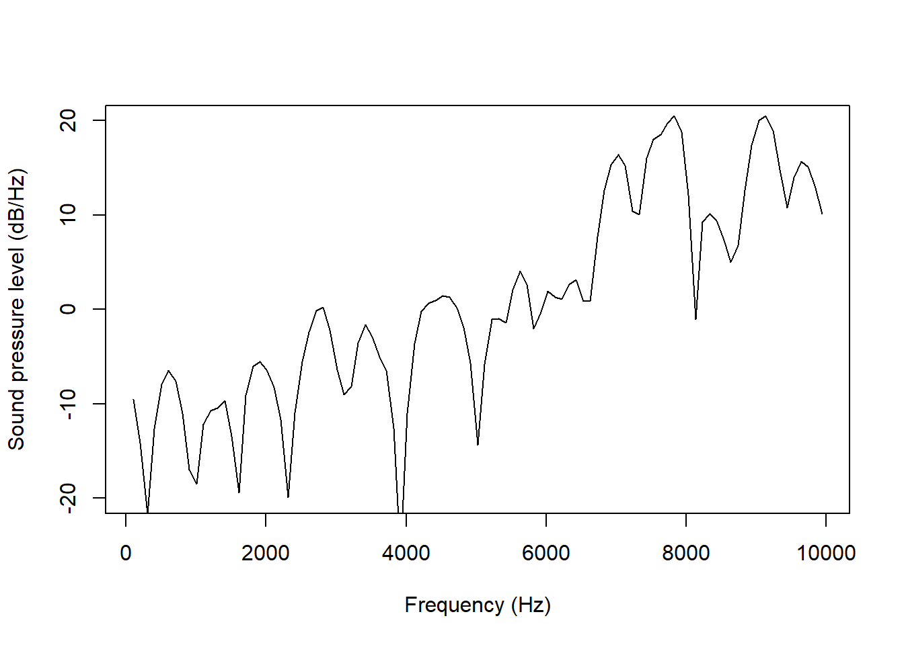

draw_spectralslice('ex/index.wav', time = 1)11 Spectral slices
praatpicture is mainly designed for plotting time series together and potentially showing how they align with annotations. There are of course other kinds of primary data visualizations used by phoneticians. (These are mostly not available in praatpicture, but I am generally open to adding features!) One such visualization which can be plotted with praatpicture is the spectral slice, implemented in the draw_spectralslice() function. I’ll show here how that works.
11.1 Appearance
11.1.1 The basic call
draw_spectralslice() takes only two obligatory arguments: sound, specifying a sound file with the .wav extension, and time, which is the specific time point where you’re interested in taking the slice from. Here we draw a spectral slice taken from an [h]:
11.1.2 Axes
Following Praat defaults, the plot above shows the entire frequency range of the sound file up to the Nyquist frequency. This is often not suitable – I’d wager phoneticians are rarely interested in frequencies above 12 kHz. In the sound. This can be changed with the freqRange argument, which gives should be both the minimum and maximum frequency desired:
draw_spectralslice('ex/index.wav', time = 1,
freqRange = c(0, 12000))It may make more sense to keep the entire frequency range if you plot them in a log scale, which can be done with the log argument:
draw_spectralslice('ex/index.wav', time = 1,
log = TRUE)The range of the y-axis is suitable enough in these plots, but you may not always find that this is the case. For example, this spectrum comes from an [s]:
draw_spectralslice('ex/ex.wav', time = 0.78,
freqRange = c(0, 10000))This spectrum looks flat to an extent that may be unsuitable. We can change the y-axis with the energyAxis argument. This is set to 60 by default, which gives a dynamic range of 60 dB/Hz, i.e. the minimum is set to 60 dB/Hz lower than the maximum. We can change this like so:
draw_spectralslice('ex/ex.wav', time = 0.78,
freqRange = c(0, 10000),
energyRange = 30)If you want to set the exact limits of the energy range, you can do it by passing a vector with two numbers:
draw_spectralslice('ex/ex.wav', time = 0.78,
freqRange = c(0, 10000),
energyRange = c(-20, 20))
Axis labels can be set with the freq_axisLabel and energy_axisLabel arguments. On the off change that you are preparing a paper in Danish, for example, you can choose to translate them:
draw_spectralslice('ex/ex.wav', time = 0.78,
freqRange = c(0, 10000),
energyRange = c(-20, 20),
freq_axisLabel = 'Frekvens (Hz)',
energy_axisLabel = 'Lydtryk (dB/Hz)')11.1.3 General apperance
As in praatpicture(), you can add a title to your plot and control its vertical alignment with the mainTitle and mainTitleAlignment arguments:
draw_spectralslice('ex/ex.wav', time = 0.78,
freqRange = c(0, 10000),
energyRange = c(-20, 20),
mainTitle = 'An [s] spectrum',
mainTitleAlignment = 0.5)There are also arguments to control the color and lineWidth of the spectrum.
draw_spectralslice('ex/ex.wav', time = 0.78,
freqRange = c(0, 10000),
energyRange = c(-20, 20),
color = 'blue',
lineWidth = 2)Similar to what we saw in Chapter 10, it is also possible use base R graphics parameters such as ps (for font size), bg (for background), and family (for font type) etc to change the apperance of the plot:
draw_spectralslice('ex/ex.wav', time = 0.78,
freqRange = c(0, 10000),
energyRange = c(-20, 20),
bg = 'pink', ps = 18, family = 'serif')11.2 Signal processing
11.2.1 Windows
A spectral slice is of course never instantaneous, but is taken from a window around the time point specified with time. The length of this window can be set with windowLength, where the default (as when plotting a spectrogram) is 5 ms, i.e. a “regular” narrowband spectrum. To plot a broadband spectrum, you can set this to 30 ms instead. This is useful for inspecting individual harmonics, as done below in an [a].
draw_spectralslice('ex/index.wav', time = 0.8,
freqRange = c(0, 5000),
windowLength = 0.03)Compare this with a narrowband spectrum, where individual harmonics are much less visible:
draw_spectralslice('ex/index.wav', time = 0.8,
freqRange = c(0, 5000),
windowLength = 0.005)You can also choose between a number of window shapes using the windowLength parameter. These were covered in much more detail in Chapter 5.
11.2.2 Estimation method
Spectra are by default estimated using the fast (discrete) Fourier transform, but praatpicture also allows for estimating spectra using the multitaper method. This is not an option in Praat, but they are fairly popular particularly for analyzing noisy obstruent sounds, since they dispense with the assumption of periodicity. For more on multitaper spectral analysis, see here.
This is the [s] we saw earlier with a spectrum analyzed using the multitaper method:
draw_spectralslice('ex/ex.wav', time = 0.78,
freqRange = c(0, 10000),
energyRange = 40,
method = 'multitaper')You will notice that this line is much less jagged.
The arguments windowLength and windowShape do not really apply to multitaper spectra, but there are a number of other parameters that can be set with the multitaper_args parameter. This accepts a named list which is then passed on to multitaper::spec.mtm(), the function that is used for estimating the spectrum.
11.3 Highlighting
draw_spectralslice() offers similar options for highlighting as praatpicture(): adding arrows, lines, rectangles, text, and delineated background colors. The arguments are similar: a named list is passed to either of the arguments draw_arrow, draw_lines, draw_rectangle, annotate and highlight.
To give a gist of how it works, here we highlight the second harmonic in the broadband spectrum we saw earlier using text and an arrow:
draw_spectralslice('ex/index.wav', time = 0.8,
freqRange = c(0, 5000),
windowLength = 0.03,
draw_arrow = list(x0 = 300, y0 = 30, y1 = 19,
angle = 15, length = 0.15),
annotate = list(x = 150, y = 24.5, labels = 'H2'))Note that you can also add more arrows or annotations to a single plot. Individual plotting arguments can be vector or the lists can be nested. Here we add arrows pointing to both the second and the fourth harmonic by setting the x0 argument with a vector
draw_spectralslice('ex/index.wav', time = 0.8,
freqRange = c(0, 5000),
windowLength = 0.03,
draw_arrow = list(x0 = c(300, 600), y0 = 30, y1 = 19,
angle = 15, length = 0.15))We can highlight parts of the spectrum with the highlight argument, which allows part of the spectrum to stand out in terms of line color, line width, and background color. Here, we do this to make the first four harmonics of the previous plot stand out:
draw_spectralslice('ex/index.wav', time = 0.8,
freqRange = c(0, 5000),
windowLength = 0.03,
highlight = list(start = 80, end = 650,
background = 'lightblue',
color = 'red', drawSize = 2))